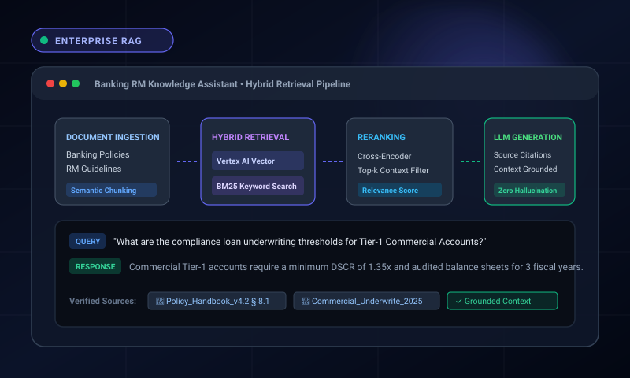
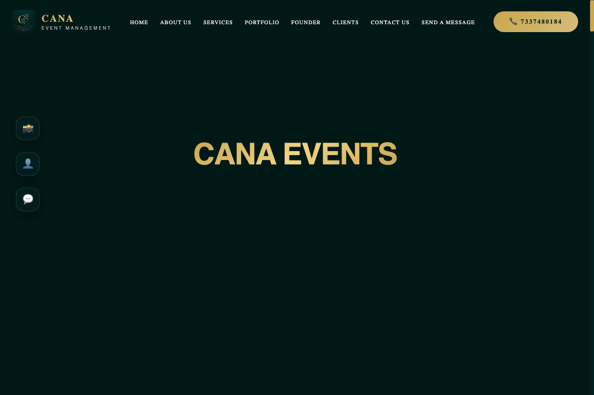

Experienced Python Engineer and Generative AI Specialist with expertise developing production-grade AI-powered applications, enterprise RAG pipelines, Agentic AI evaluation harnesses, model alignment (RLHF/SFT), and full-stack web architectures using FastAPI, PostgreSQL, and React.
I am a Python Engineer specializing in developing intelligent solutions by combining Large Language Models (LLMs) with high-performance, scalable backend architectures. I have contributed to enterprise AI, RAG, and LLM evaluation initiatives for global clients including Meta, Apple, and Amazon through the Turing platform.
My expertise spans enterprise Retrieval-Augmented Generation (RAG) with hybrid retrieval and reranking, Agentic AI evaluation in reinforcement learning environments, Supervised Fine-Tuning (SFT) and RLHF workflows, and building full-stack AI platforms using FastAPI, PostgreSQL, and modern frontend technologies.
I graduated from Sri Venkateswara College of Engineering, Tirupati with a B.Tech in Information Technology (GPA 8.6). Over the course of my career, I have focused on building production-grade LLM architectures, context-grounded retrieval systems with source citations, rigorous automated test harnesses for AI agents, and end-to-end full-stack software applications.
Proficient in building complex workflows using LangChain and LangGraph, tool bindings, custom state memory models, and guardrails to prevent hallucinations in mission-critical applications.
Enterprise RAG & Hybrid Retrieval
Developing Retrieval-Augmented Generation pipelines with hierarchical and semantic chunking, Vertex AI Vector Search, BM25 hybrid search, and cross-encoder reranking with source citations.
Integrating dense and sparse retrievers, pgvector similarity search, metadata filtering, and document parsers to maximize context retrieval relevance and eliminate hallucinations.
Model Alignment & Evaluation (RLHF/SFT)
Contributing directly to Reinforcement Learning from Human Feedback (RLHF) and Supervised Fine-Tuning (SFT) workflows to evaluate and improve model accuracy, reasoning, and instruction following.
Building high-performance, asynchronous microservices and web platforms using Python, FastAPI, Django, PostgreSQL, and React.js. Implementing secure JWT authentication, SQLAlchemy, and background workers.
Developed Python-based solutions for AI-powered applications, LLM workflows, and Generative AI use cases, focusing on reliability, response quality, and model performance. Contributed to enterprise AI and LLM projects for global clients including Meta, Apple, and Amazon through the Turing platform, following Agile/Scrum development practices.
Built RAG workflows involving document ingestion, preprocessing, hierarchical and semantic chunking, embedding generation, retrieval, prompt construction, and context-grounded LLM response generation with source citations.
Built LLM-powered workflows using LangChain, including prompt templates, chains, memory, and tool integrations.
Implemented prompt engineering strategies to improve response accuracy, contextual understanding, reasoning, and factual consistency.
Worked on RLHF and SFT workflows, evaluating model outputs, preparing datasets, and improving model reliability and contextual performance.
Integrated OpenAI and other LLM APIs with Python backend systems to support AI inference and application workflows.
Contributed to Agentic AI evaluation by designing realistic multi-step scenarios involving reasoning, tool calling, task execution, and automated verification of agent behavior.
Developed evaluation scenarios and verification workflows to identify agent failures, incorrect tool usage, reasoning issues, and task-completion errors, using SQL-based validation and automated test harnesses.
Collaborated with AI engineers, data scientists, and product teams on model evaluation, dataset improvement, debugging, and AI workflow optimization.
Key Projects & Contributions at Turing Enterprises:
Contributed to the development of an enterprise banking knowledge assistant that helps Relationship Managers retrieve information from internal banking documents using natural-language queries.
Worked on the RAG workflow involving document parsing, hierarchical and semantic chunking, and embedding generation.
Contributed to hybrid retrieval using Vector Search and BM25.
Worked on reranking and LLM-based answer generation with source citations.
Focused on improving retrieval accuracy, providing context-grounded responses, and supporting secure access to banking knowledge.
Project 2: Agentic AI Evaluation – RL Gym Environment
Contributed to Agentic AI evaluation by designing realistic multi-step scenarios involving reasoning, tool calling, task execution, and automated verification of agent behavior.
Developed evaluation scenarios and verification workflows to identify agent failures, incorrect tool usage, reasoning issues, and task-completion errors.
Used SQL-based validation and automated test harnesses to verify agent behavior.
Collaborated with AI engineers, data scientists, and product teams on model evaluation, dataset improvement, debugging, and AI workflow optimization.
Contributed to enterprise AI and LLM projects for global clients, including Meta, Apple, and Amazon, through the Turing platform following Agile/Scrum practices.
Worked on Reinforcement Learning from Human Feedback (RLHF) and Supervised Fine-Tuning (SFT) workflows to improve the quality, reliability, and contextual performance of large language models.
Evaluated LLM-generated responses based on quality, accuracy, relevance, and instruction following.
Prepared and reviewed datasets for supervised fine-tuning and model improvement.
Worked on prompt generation, response evaluation, and feedback workflows.
Contributed to model quality improvement initiatives for projects associated with Apple, Meta, and Amazon.
Featured Work
Highlighted Projects

Turing Enterprises
FastAPIRAGVertex AIBM25Hybrid Search
Banking RM Knowledge Assistant – RAG Application
An enterprise banking knowledge assistant that helps Relationship Managers retrieve accurate information from internal banking policies and documents using natural-language queries.
Engineered document parsing, hierarchical & semantic chunking, and embedding generation.
Executed Reinforcement Learning from Human Feedback (RLHF) and Supervised Fine-Tuning (SFT) workflows to advance LLM quality, reliability, and contextual accuracy.
Evaluated LLM-generated responses across accuracy, relevance, and instruction adherence.
Curated and audited high-quality datasets for supervised fine-tuning and alignment.
Designed targeted prompt generation and preference feedback evaluation rubrics.
Contributed to model quality initiatives for projects associated with Apple, Meta, and Amazon.
An end-to-end AI-powered Sales Call Intelligence Platform automating sales-call evaluation, conversation analysis, and advisor performance monitoring.
Integrated Faster-Whisper for transcription and Groq LLM for real-time conversation analysis.
Built sentiment analysis, needs discovery, objection handling, compliance, and scoring.
Designed structured LLM outputs for issue detection, severity tagging, and background jobs.
Architected a RAG-based Knowledge Assistant with LangChain, pgvector, and similarity search.

Client Project • Deployed
React.jsTailwind CSSEmailJSViteVercel
Cana Event Management – Responsive Web Platform
A responsive production web application designed for Cana Event Management company to showcase corporate events, college fests, weddings, and photoshoots, streamlining client booking requests.
Architected a modern, responsive single-page web application using React 19, Vite, and Tailwind CSS.
Implemented seamless event booking and inquiry dispatch workflows with automated EmailJS integration.
Designed interactive service catalogs, responsive portfolio galleries, and quotation inquiry forms.
Configured production continuous deployment and performance asset optimization on Vercel.
An intelligent full-stack coding assistant built with FastAPI, LangChain, and React that teaches algorithmic thinking through Socratic hints, bug detection, complexity optimization, and line-by-line explanations.
Built a responsive multi-panel React + Vite frontend with CodeMirror 6 supporting Python, JS, Java, and C++.
Integrated multi-turn conversational chat with conversation memory for real-time interactive debugging.
Built scalable REST API backend microservices with FastAPI and Pydantic schema validation.
Contact Me!
Have an AI project or role in mind?
I am looking for production opportunities as a Python Engineer, Generative AI Engineer, or RAG/Backend Architect. Reach out and let's build something exceptional.